The Hong Kong Polytechnic University Department of Computing
COMP4913 Capstone Project Report (Final)
Financial Time-Series Prediction Using Advanced Neural Network Models
Student Name: CHAN Cheung Hong Student ID No.: 22081328D Programme-Stream Code: 61435-FCS Supervisor: Dr Yujie Wu Co-Examiner:
2nd Assessor:
Submission Date: 31 March 2026
This project benchmarks sequence models for short-horizon forecasting under a unified and reproducible pipeline that now supports multiple target definitions and both real (SPY) and synthetic (sine) data sources. The latest archived final-report bundle (generated at 2026-03-31T20:31:21Z) evaluates four tasks: sine_next_day, next_return, next_volatility, and next_mean_return. Across these tasks, RNN, LSTM, GRU, Transformer, and a flattened-sequence linear-regression baseline are compared on aligned splits using MSE/MAE and directional accuracy (DA).
The cross-task summary shows that Baseline-LR is best on sine_next_day and next_volatility, LSTM is best on next_return, and GRU is best on next_mean_return. The best test MSE values are 4.8070e-08 (sine), 9.1979e-05 (next_return), 1.7733e-05 (next_volatility), and 1.5519e-05 (next_mean_return). These outcomes reinforce two conclusions: (1) no single neural architecture dominates all task definitions, and (2) strong linear baselines remain essential in financial-style forecasting benchmarks.
Financial time-series forecasting remains a difficult problem because market data are noisy, non-stationary, and often only weakly predictable. Even when useful structure exists, the signal-to-noise ratio is usually small, particularly for return prediction rather than price-level prediction. This challenge has motivated extensive use of machine learning and deep learning methods for sequence modelling, especially recurrent architectures and attention-based models. [1], [5], [8]
This project focuses on a configurable short-horizon forecasting system where targets are defined by target_mode, horizon, and target_smooth_window. The final archive includes one synthetic sanity task (sine_next_day) and three SPY market tasks (next_return, next_volatility, next_mean_return). SPY remains a reasonable proxy for broad U.S. equity-market behaviour, while the synthetic sine task provides a controlled check that the pipeline behaves sensibly under an easier signal regime. [9]
The core problem is not simply to generate forecasts, but to determine whether more expressive neural sequence models provide a measurable advantage over a simpler baseline when all methods are trained and evaluated on the same prepared dataset. In financial forecasting, complex models can easily appear promising while actually overfitting noisy data. Therefore, a fair shared-split comparison is academically more meaningful than isolated single-model demonstrations. [1], [5]
The aim of this project is to benchmark several neural sequence architectures across the implemented task system—covering both the synthetic sanity task and multiple SPY target definitions—and determine whether any of them outperform a flattened-sequence linear-regression baseline in prediction error and directional accuracy under matched splits and preprocessing.
The specific objectives are:
The latest archived report bundle covers four fully populated tasks: sine_next_day, next_return, next_volatility, and next_mean_return. Claims in this report are scoped to these definitions, with each task tracked by explicit task_id, target_mode, horizon, and (where applicable) target_smooth_window.
The remainder of this report covers background literature, formal task definition, data preparation, methodology, tuning design, results, discussion, limitations, conclusion, and appendices.
Financial forecasting has long been studied through both statistical and machine-learning approaches. A useful distinction is between forecasting prices and forecasting returns. Prices usually contain strong trends and scale effects, whereas returns are closer to stationary and are therefore more appropriate for modelling short-term predictive relationships. However, this also makes the forecasting problem harder because much of the predictable structure has already been removed. [5], [8]
Prior work has shown that deep sequence models can capture nonlinear temporal relationships in financial data, but the size of the advantage depends strongly on the market, target variable, and evaluation design. Fischer and Krauss, for example, demonstrated that LSTM networks can be effective in financial market prediction, while also highlighting the fragility of performance under realistic conditions. [1]
A simple linear model remains an important baseline in time-series forecasting because it offers interpretability, low variance, and a useful reference point for judging whether a more complex model actually extracts additional structure. When a neural network only marginally outperforms linear regression, the correct interpretation is usually that the forecasting signal is weak or that the task is close to the limit of what is learnable from the available features. [5], [10]
Vanilla RNNs explicitly process ordered sequences by updating a hidden state across time steps. This makes them a natural baseline neural architecture for sequential forecasting, but standard RNNs are known to struggle with unstable gradients and limited long-range memory. [2], [6]
LSTM networks introduce gated memory cells that help preserve information over longer horizons, making them well suited to sequence tasks where delayed dependencies matter. [2] GRUs provide a related gated mechanism with a simpler parameterisation and often achieve comparable performance with lower computational overhead. [3] In financial forecasting, both architectures are widely used because they offer a better trade-off between expressiveness and trainability than a plain RNN. [1]
Transformers replace recurrence with self-attention, which can model pairwise relationships across all positions in a sequence. This design has achieved outstanding results in natural language processing and many other sequence domains. [4] Nevertheless, Transformer performance depends heavily on dataset scale, architecture choices, and tuning budget. On relatively small financial datasets with limited input dimensionality, the expected advantage over recurrent models is less certain. [4], [8]
This project is positioned as a controlled benchmark rather than a claim of trading-system superiority. Its contribution is to compare RNN, LSTM, GRU, Transformer, and linear regression under one aligned preprocessing/evaluation workflow across explicitly defined tasks: sine_next_day (synthetic sanity), plus SPY next_return, next_volatility, and next_mean_return (market targets). This framing avoids overgeneralising from any single return definition and keeps conclusions tied to concrete target_mode/horizon/target_smooth_window settings.
The forecasting system is formulated as supervised learning on multifeature sequences. Let f_t in R^8 denote the engineered feature vector at day t, and let each sample be a rolling lookback window:
X_t = [f_{t-L+1}, ..., f_t]
where L is the sequence length (seq_len, tuned per task/model). The repository supports multiple targets via target_mode:
sine_next_day (synthetic sanity task),next_return (1-step return),next_volatility (forward rolling volatility),next_mean_return (forward rolling mean return),horizon_return.The latest final-report archive evaluates these four task IDs:
sine_next_day (data_source=sine, horizon=1, target_smooth_window=1),next_return (data_source=spy, horizon=1, target_smooth_window=1),next_volatility (data_source=spy, horizon=1, target_smooth_window=5),next_mean_return (data_source=spy, horizon=1, target_smooth_window=5).The report addresses the following research questions:
sine_next_day, next_return, next_volatility, next_mean_return)?sine_next_day) and the SPY market tasks (next_return, next_volatility, next_mean_return)?The technical objective is to produce an apples-to-apples comparison with common data preparation, common split boundaries, common evaluation metrics, and validation-driven model selection.
A model is considered successful if it demonstrates lower validation and test error than alternatives under the shared setup. However, because financial forecasting is often used for directional decisions, directional accuracy is also reported as a complementary metric rather than relying on MSE alone.
The latest report bundle evaluates both synthetic and market tasks. For market tasks, data are downloaded from Yahoo Finance through yfinance with SPY as the instrument and repository default START=2005-01-01. In parallel, the sine_next_day task uses the repository’s generated sine-series feature frame as a controlled sanity benchmark. [9], [11]
The raw downloaded close series is converted to daily log returns:
r_t = log(P_t / P_{t-1})
Using returns instead of prices reduces scale effects and makes the target more appropriate for short-horizon statistical learning. [5]
For neural models, the repository builds three-dimensional input tensors of shape (N, seq_len, 8), where each sample contains seq_len consecutive days of 8 engineered features and one scalar target. The tuned search space includes seq_len ∈ {20, 30, 60} in src/tuning/main.py.
The 8 engineered features produced by build_spy_feature_frame are:
log_retoc_rethl_rangevol_chgma_5_gapma_20_gapvolatility_5volatility_20Target construction is controlled by target_mode, horizon, and target_smooth_window. In the latest archived bundle, the evaluated tasks are sine_next_day, next_return, next_volatility (target_smooth_window=5), and next_mean_return (target_smooth_window=5).
For transparency, the archived best-tuned comparisons use the following winning seq_len values by task (best test-MSE run per task):
| Task | Best test-MSE winner | Winning seq_len |
|---|---|---|
sine_next_day |
Baseline-LR | 30 |
next_return |
LSTM | 30 |
next_volatility |
Baseline-LR | 20 |
next_mean_return |
GRU | 30 |
Splitting is chronological rather than random for all tasks, preventing future information leakage into training. The same train/validation/test protocol is applied consistently across the four archived tasks in reports/final_report_tasks/20260331T192814Z.
The input sequences are standardised with StandardScaler, fitted only on the training inputs and then applied to validation and test sets. This avoids information leakage from future periods into the training transformation pipeline, which would otherwise bias the evaluation. [5], [10]
All models share the same high-level pipeline:
sine_next_day, next_return, next_volatility, or next_mean_return).The baseline is a flattened-sequence linear regression model. It uses the same multifeature seq_len window as the neural models, but reshapes each (seq_len, 8) sequence into a tabular vector (seq_len × 8 features) so the target alignment remains identical. This baseline tests whether nonlinear sequence modelling provides gains beyond a strong linear model on the same information set. [5], [10]
The vanilla RNN model consists of a recurrent layer over the seq_len input sequence followed by a linear output layer that maps the last hidden state to a scalar forecast. This architecture serves as the simplest neural sequence benchmark. [6]
The LSTM model replaces the simple recurrent cell with gated memory units and again uses the last sequence output to produce a one-step scalar prediction. The expectation from literature is that LSTM should be better able to preserve useful information over the lookback window. [1], [2]
The GRU model is structurally similar to the LSTM model but uses update and reset gates with fewer parameters. It is included to test whether a lighter gated recurrent architecture can match or exceed LSTM on this task. [3]
The Transformer model first projects each 8-dimensional timestep feature vector into a learned embedding space, adds positional encodings, applies stacked Transformer encoder layers, and uses the final time-step representation for scalar prediction. This architecture is intended to test whether self-attention can outperform recurrence on this multifeature financial sequence problem. [4]
This subsection summarises compact model equations used in the benchmark. Extended derivations are deferred to the appendix.
Backshift form:
Phi(B^s) phi(B) (1 - B)^d (1 - B^s)^D y_t
=
Theta(B^s) theta(B) epsilon_t
B: backshift operator (B y_t = y_{t-1}); s: seasonal period.d, D: non-seasonal/seasonal differencing orders.phi, theta, Phi, Theta: non-seasonal and seasonal AR/MA polynomials.epsilon_t: white-noise innovation.Example additive Holt-Winters updates:
ell_t = alpha(y_t - s_{t-m}) + (1 - alpha)(ell_{t-1} + b_{t-1})
b_t = beta(ell_t - ell_{t-1}) + (1 - beta)b_{t-1}
s_t = gamma(y_t - ell_t) + (1 - gamma)s_{t-m}
y_hat_{t+h|t} = ell_t + h b_t + s_{t-m+h_m}
ell_t: level, b_t: trend, s_t: seasonal state, m: season length.alpha, beta, gamma in (0, 1): smoothing parameters.y_hat_{t+h|t}: h-step forecast.Flattened-sequence linear regression:
y_hat_t = w^T vec(X_{t-L+1:t}) + b
where X_{t-L+1:t} in R^{L x F}, L = seq_len, F = 8, and vec(.) in R^{LF}.
w in R^{LF}, b in R: regression parameters.y_hat_t: one-step-ahead target forecast.min_{w,b} sum_t (y_t - y_hat_t)^2 (MSE).Vanilla RNN
h_t = tanh(W_x x_t + W_h h_{t-1} + b_h)
y_hat_t = W_o h_t + b_o
x_t in R^F: feature vector at time t; h_t: hidden state.h_{t-1} -> h_t.min_Theta sum_t (y_t - y_hat_t)^2, via backpropagation through time.LSTM (compact gates)
i_t = sigmoid(W_i[x_t; h_{t-1}] + b_i)
f_t = sigmoid(W_f[x_t; h_{t-1}] + b_f)
c_tilde_t = tanh(W_c[x_t; h_{t-1}] + b_c)
o_t = sigmoid(W_o[x_t; h_{t-1}] + b_o)
c_t = f_t * c_{t-1} + i_t * c_tilde_t
h_t = o_t * tanh(c_t)
y_hat_t = W_y h_t + b_y
i_t, f_t, o_t: input/forget/output gates; c_t: cell state.c_{t-1} -> c_t mitigates vanishing gradients.GRU (compact gates)
z_t = sigmoid(W_z[x_t; h_{t-1}] + b_z)
r_t = sigmoid(W_r[x_t; h_{t-1}] + b_r)
h_tilde_t = tanh(W_h[x_t; r_t * h_{t-1}] + b_h)
h_t = (1 - z_t) * h_{t-1} + z_t * h_tilde_t
y_hat_t = W_y h_t + b_y
z_t, r_t: update/reset gates.Scaled dot-product self-attention:
Attention(Q, K, V) = softmax(QK^T / sqrt(d_k)) V
with Q = XW_Q, K = XW_K, V = XW_V, and forecast head
y_hat_t = W_h z_t + b_h
where z_t is the final encoder representation (last position) after positional encoding and stacked encoder blocks.
d_k: key/query dimension; W_Q, W_K, W_V, W_h: trainable projections.Repository-level defaults (for example HORIZON=1, TARGET_MODE=horizon_return) are defined in src/common/config.py. Run-specific overrides (including CLI overrides such as --horizon and --target-mode) are resolved through src/common/runtime_config.py and then passed into experiment preparation, so archived experiments may intentionally differ from defaults.
For this report, the archived final metrics are taken from runtime-resolved experiment configs (effective CLI + staged-winner selections), not from static defaults in src/common/config.py. Concretely, run truth is read from reports/final_report_tasks/20260331T192814Z/tuning_winners.csv, per-task reports/final_report_tasks/20260331T192814Z/*/best_tuned_comparison_*.md, and the bundle-level synthesis reports/final_report_tasks/20260331T192814Z/overall_task_summary.md.
The training workflow uses the Adam optimiser, mean squared error loss, early stopping with validation-loss smoothing, checkpointing of the best validation state, and scheduler-based learning-rate reduction. Hyperparameter selection is validation-driven, and the final archived best-tuned comparison was generated from the frozen winners stored in tuning_winners.csv. [12]
Figure 1 is included to demonstrate that the tuned pipeline produces stable convergence patterns before the report interprets task-specific winners.
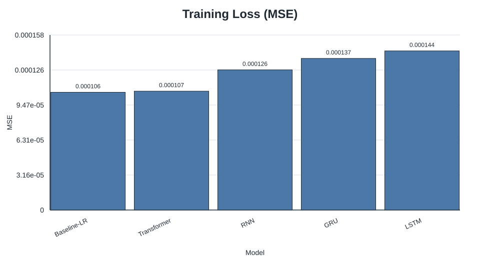
Figure 1. Training-loss comparison for the best tuned models and baseline.
Three metrics are reported:
DA is particularly relevant in finance because a model can sometimes produce modestly inaccurate magnitudes while still being useful for direction-of-move classification.
However, DA must be interpreted by target_mode rather than as a uniform cross-task score. For signed return-style targets (for example next_return and next_mean_return), DA is meaningfully discriminative because the sign directly encodes up/down direction. For level-like or strictly non-negative targets (especially next_volatility, defined from rolling standard deviation), sign-based DA is not a discriminative metric and can quickly saturate near a ceiling. Therefore, on next_volatility, model ranking should prioritise MSE/MAE and treat DA only as a weak supplementary indicator.
Hyperparameter tuning is necessary because model comparisons are not meaningful when architectures are evaluated only at arbitrary default settings. This project uses a staged tuning workflow to search for better-performing configurations using validation MSE as the selection criterion.
The tuning process is sequential. For recurrent models, the stages are:
For the Transformer, the stages are:
At each stage, the winning value is frozen before the next parameter group is explored.
The recurrent models and the Transformer do not share identical search spaces because their architectures differ. This is reasonable, but the same validation-based winner-selection rule is applied consistently across all model families.
The latest archive contains task-specific tuned winners rather than one global best configuration. Cross-task winners by test MSE are:
| task_id | Winner | Best test MSE |
|---|---|---|
sine_next_day |
Baseline-LR | 4.807035774110167e-08 |
next_return |
LSTM | 9.197905455948785e-05 |
next_volatility |
Baseline-LR | 1.7733482060336406e-05 |
next_mean_return |
GRU | 1.5519119187956676e-05 |
This confirms that tuning outcomes are task-dependent and should be interpreted per task_id.
Sequential tuning is efficient, but it does not exhaustively search hyperparameter interactions. A later parameter sweep can make an earlier frozen choice suboptimal. Therefore, the chosen winners should be interpreted as strong practical settings found under a constrained tuning budget rather than globally optimal architectures.
This chapter reports outcomes by task, where each task is identified by task_id and defined by target_mode + horizon (+ target_smooth_window where applicable).
Table 1 summarises the best-tuned winner for each task from overall_task_summary.md.
| Task | task_id | target_mode | horizon | target_smooth_window | Best model (test MSE) | Best test MSE |
|---|---|---|---|---|---|---|
| Task A | sine_next_day |
sine_next_day |
1 | 1 | Baseline-LR | 4.807035774110167e-08 |
| Task B | next_return |
next_return |
1 | 1 | LSTM | 9.197905455948785e-05 |
| Task C | next_volatility |
next_volatility |
1 | 5 | Baseline-LR | 1.7733482060336406e-05 |
| Task D | next_mean_return |
next_mean_return |
1 | 5 | GRU | 1.5519119187956676e-05 |
sine_next_daynext_returnnext_volatilitynext_mean_return| Task | task_id |
Comparison report | Figures directory |
|---|---|---|---|
| Task A | sine_next_day |
reports/final_report_tasks/20260331T192814Z/sine_next_day/best_tuned_comparison_sine_next_day.csv |
reports/final_report_tasks/20260331T192814Z/sine_next_day/figures/ |
| Task B | next_return |
reports/final_report_tasks/20260331T192814Z/next_return/best_tuned_comparison_next_return.csv |
reports/final_report_tasks/20260331T192814Z/next_return/figures/ |
| Task C | next_volatility |
reports/final_report_tasks/20260331T192814Z/next_volatility/best_tuned_comparison_next_volatility.csv |
reports/final_report_tasks/20260331T192814Z/next_volatility/figures/ |
| Task D | next_mean_return |
reports/final_report_tasks/20260331T192814Z/next_mean_return/best_tuned_comparison_next_mean_return.csv |
reports/final_report_tasks/20260331T192814Z/next_mean_return/figures/ |
This section now places each figure immediately after the paragraph that states why it is needed, and each figure includes a fixed interpretation template.
sine_next_dayFigure 4A-1 is included to compare optimisation behaviour across all tuned models on the easiest synthetic-style target before interpreting winner quality.
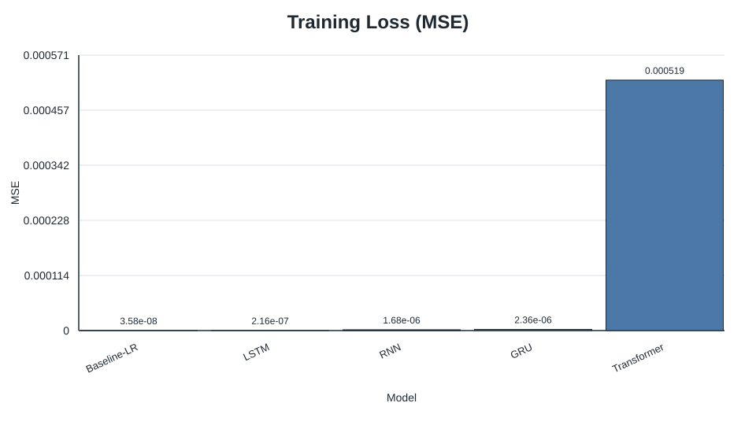
Figure 4A-1. Best-tuned training-loss comparison for sine_next_day.
Figure 4A-2 is included to identify which tuned model generalises best on validation data for sine_next_day.
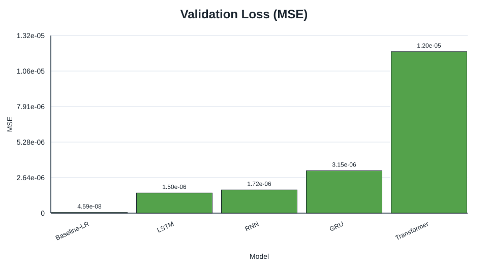
Figure 4A-2. Best-tuned validation-loss comparison for sine_next_day.
Figure 4A-3 is included to verify out-of-sample error ranking on the held-out test split for Task A.
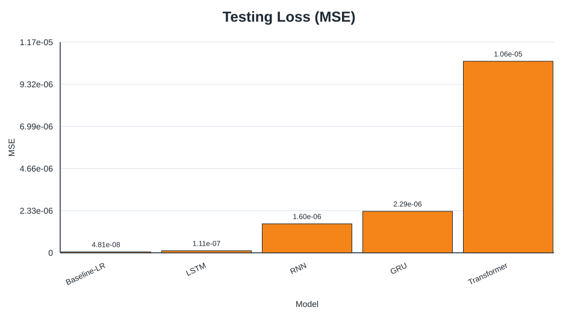
Figure 4A-3. Best-tuned testing-loss comparison for sine_next_day.
Figure 4A-4 is included to show whether stage-wise tuning changed model performance materially in sine_next_day.
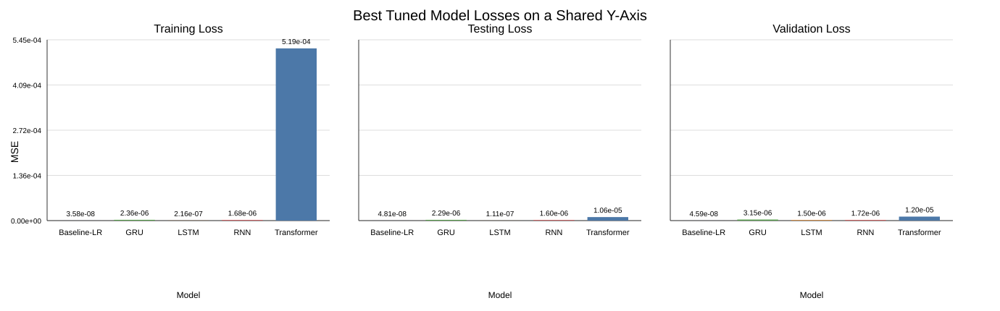
Figure 4A-4. Hyperparameter-impact model-loss summary for sine_next_day.
Figure 4A-5 is included to test calibration and bias patterns of the best neural model’s predictions.
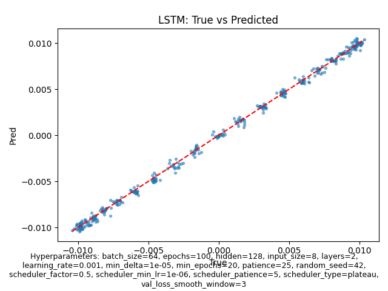
Figure 4A-5. LSTM predicted-vs-actual scatter for sine_next_day tuned comparison.
Figure 4A-6 is included to inspect local temporal fit quality and lag/overshoot behaviour in a contiguous slice.
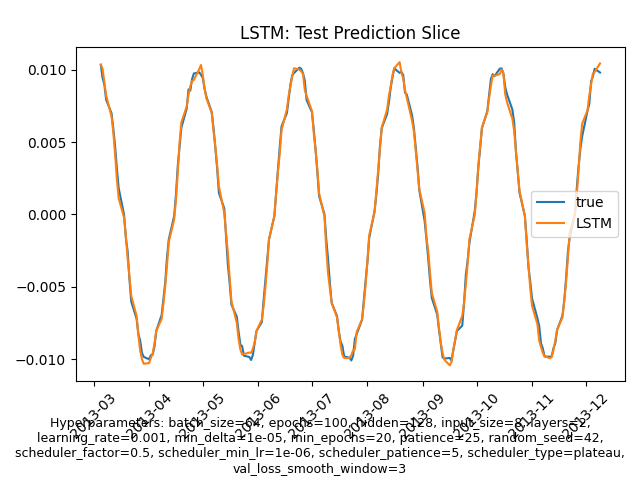
Figure 4A-6. LSTM prediction slice for sine_next_day tuned comparison.
next_returnFigure 4B-1 is included to compare training convergence behaviour for the harder real-market next_return target.
Figure 4B-1. Best-tuned training-loss comparison for next_return.
Figure 4B-2 is included to compare validation generalisation before final test claims are made for Task B.
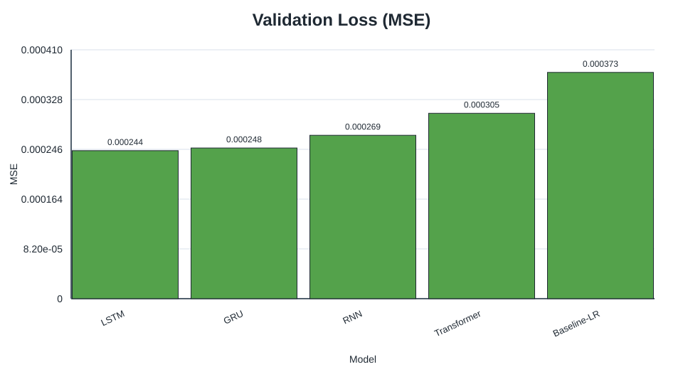
Figure 4B-2. Best-tuned validation-loss comparison for next_return.
Figure 4B-3 is included to validate final model ranking on held-out test data for next_return.
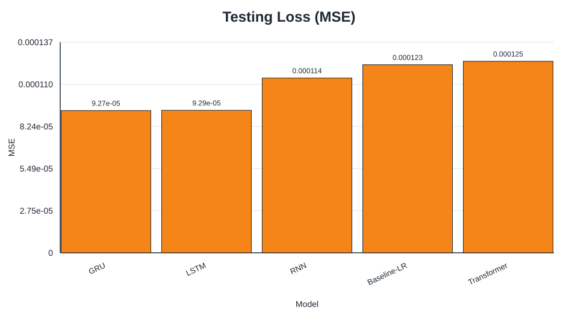
Figure 4B-3. Best-tuned testing-loss comparison for next_return.
Figure 4B-4 is included to examine whether hyperparameter stages produced meaningful improvements for each architecture.
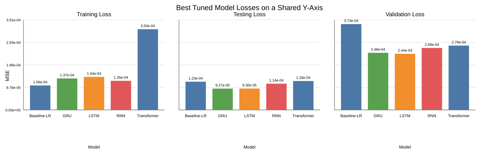
Figure 4B-4. Hyperparameter-impact model-loss summary for next_return.
Figure 4B-5 is included to inspect prediction calibration of the winning LSTM on noisy signed returns.
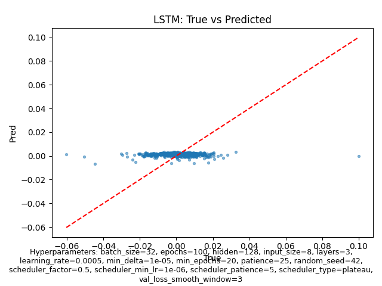
Figure 4B-5. LSTM predicted-vs-actual scatter for next_return tuned comparison.
Figure 4B-6 is included to inspect sequence-level fit quality and turning-point tracking for the winner.
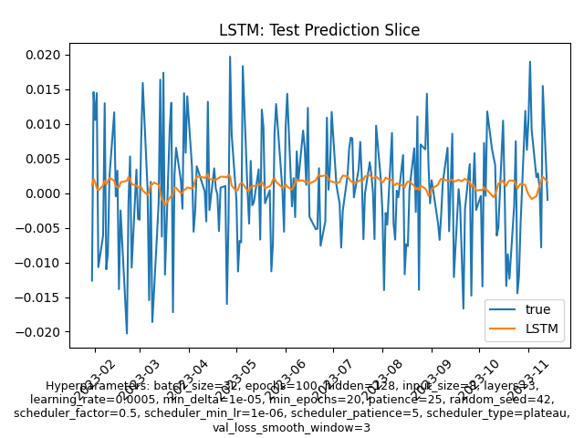
Figure 4B-6. LSTM prediction slice for next_return tuned comparison.
next_volatilityFigure 4C-1 is included to compare optimisation behaviour for volatility forecasting candidates.
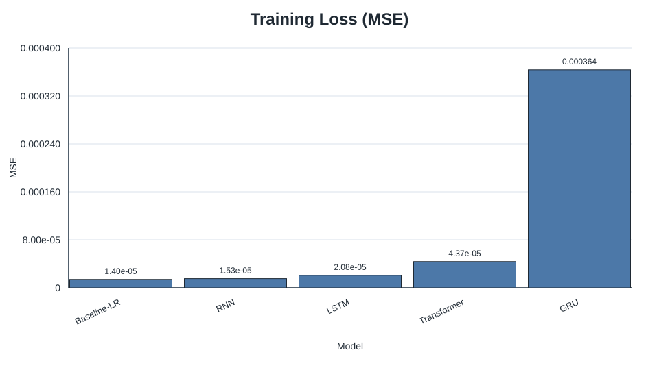
Figure 4C-1. Best-tuned training-loss comparison for next_volatility.
Figure 4C-2 is included to evaluate validation ranking for volatility generalisation quality.
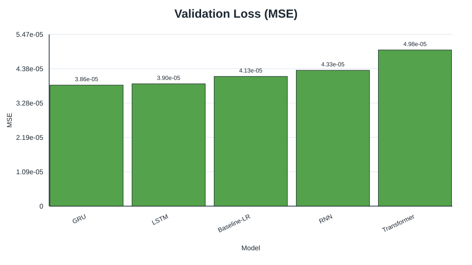
Figure 4C-2. Best-tuned validation-loss comparison for next_volatility.
Figure 4C-3 is included to confirm final held-out ranking for next_volatility.
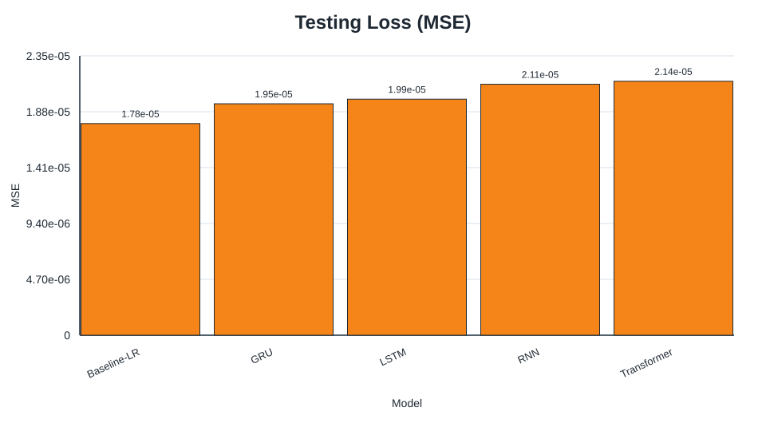
Figure 4C-3. Best-tuned testing-loss comparison for next_volatility.
Figure 4C-4 is included to assess how much staged hyperparameter tuning changed volatility results.
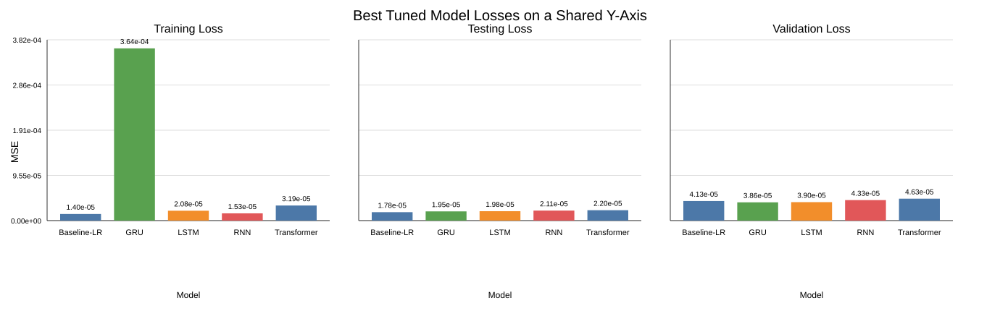
Figure 4C-4. Hyperparameter-impact model-loss summary for next_volatility.
Figure 4C-5 is included to inspect calibration of the best neural (GRU) predictions against realised volatility levels.
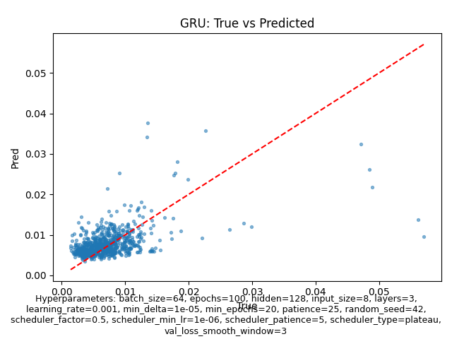
Figure 4C-5. GRU predicted-vs-actual scatter for next_volatility tuned comparison.
Figure 4C-6 is included to inspect contiguous volatility tracking over time for the best neural model.
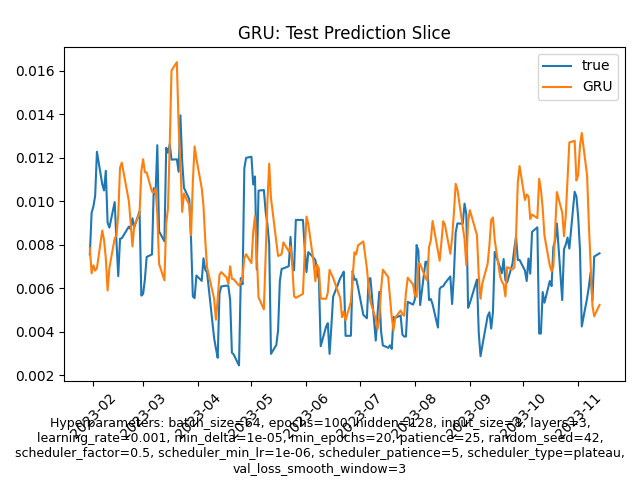
Figure 4C-6. GRU prediction slice for next_volatility tuned comparison.
next_mean_returnFigure 4D-1 is included to compare training dynamics for moving-average return forecasting.
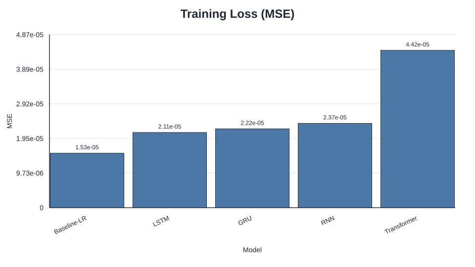
Figure 4D-1. Best-tuned training-loss comparison for next_mean_return.
Figure 4D-2 is included to compare validation generalisation before reporting final test rankings.
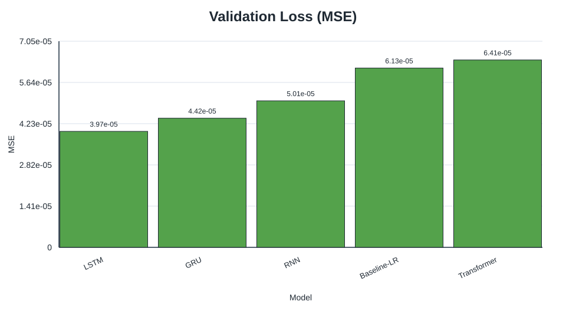
Figure 4D-2. Best-tuned validation-loss comparison for next_mean_return.
Figure 4D-3 is included to confirm held-out ranking for the smoothed return task.
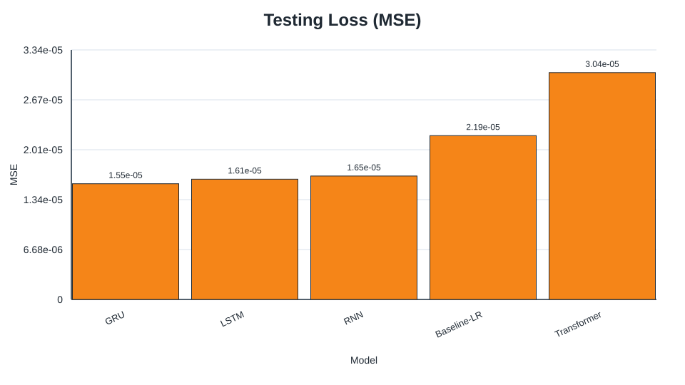
Figure 4D-3. Best-tuned testing-loss comparison for next_mean_return.
Figure 4D-4 is included to quantify hyperparameter-stage impact on final loss outcomes.
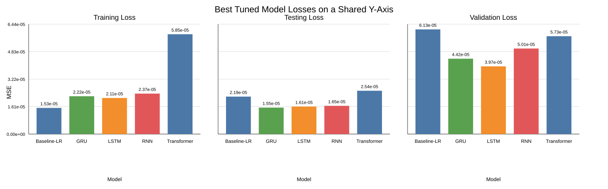
Figure 4D-4. Hyperparameter-impact model-loss summary for next_mean_return.
Figure 4D-5 is included to inspect calibration quality for the GRU winner on averaged signed returns.
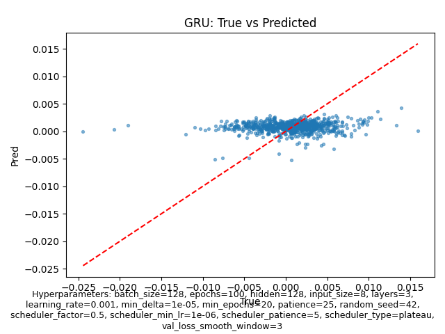
Figure 4D-5. GRU predicted-vs-actual scatter for next_mean_return tuned comparison.
Figure 4D-6 is included to check time-local alignment and lag behaviour for GRU predictions.
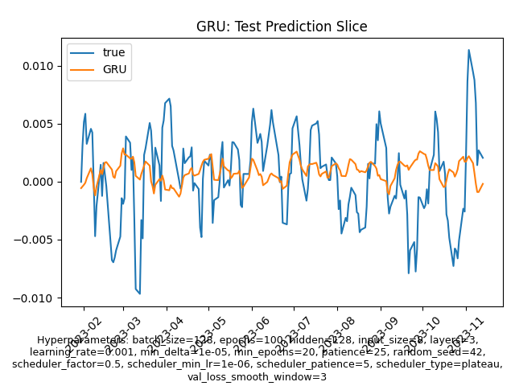
Figure 4D-6. GRU prediction slice for next_mean_return tuned comparison.
next_mean_return, with expected smoothing limitations.next_return.next_mean_return.The latest bundle shows no universal single winner; instead, winners vary by task definition. This is still consistent with literature: gated recurrent models remain strong on noisy sequence forecasting, while simpler baselines can dominate when the target is smoother or effectively linear. [1], [2], [5]
The strong baseline result may be the most informative outcome in the report. If a linear model nearly matches the best neural model, the appropriate interpretation is not that neural methods failed, but that the task itself contains limited predictable structure under the chosen feature set. This is entirely plausible for daily equity-index returns, where much of the variation may be close to noise at this horizon. [1], [5], [8]
The GRU’s superior directional accuracy but weaker MSE illustrates a meaningful metric trade-off. A model can make slightly larger magnitude errors while still predicting the correct sign more often. For decision-making tasks where direction matters more than calibrated return size, that distinction could be important.
At the same time, this interpretation boundary is target-dependent. DA comparisons are most informative for targets whose realised values are naturally signed (such as next_return and next_mean_return). For next_volatility (forward rolling standard deviation), the target is non-negative by construction, so sign-based DA can become near-constant and non-discriminative across models. In that case, lower MSE/MAE should be treated as the primary evidence of better forecasting quality, and DA should not be over-interpreted when comparing heterogeneous targets in a single table.
The archived results broadly agree with prior expectations in two ways. First, gated recurrent models outperform a plain RNN, which is consistent with their design motivation. [2], [3] Second, Transformer superiority is not guaranteed on small, noisy, low-dimensional financial datasets. [4], [8] The project therefore supports a cautious reading of recent deep-learning enthusiasm: architecture choice must match the data regime.
From a practical perspective, model selection should be conditioned on task definition. For the latest bundle, Baseline-LR wins two tasks, while LSTM and GRU each win one. A practitioner with limited compute or strong interpretability requirements can justifiably prioritize the baseline unless a target-specific tuned neural model demonstrates clear gains.
Only one real market asset (SPY) plus one synthetic data source are evaluated. Findings should not be assumed to generalise to single stocks, other asset classes, or international markets.
The archived report is based on a limited set of recorded runs rather than repeated experiments with mean ± standard deviation. As a result, some observed ranking differences may be sensitive to run-to-run randomness.
The project now includes four archived tasks, but ranking still changes across target_mode definitions. Additional assets, broader horizons, and multivariate external signals could materially change the observed winner ordering.
The repository downloads data dynamically from Yahoo Finance. Because market history grows over time and occasional adjustments can occur, future reruns may not reproduce exactly the same sample count or metric values unless the final dataset snapshot is frozen. [11]
The report evaluates prediction quality, not trading profitability. It does not include transaction costs, slippage, portfolio construction, or risk-adjusted returns. Therefore, the results should not be interpreted as direct evidence of a profitable trading strategy.
This project investigated whether neural sequence models improve forecasting quality under a shared, reproducible benchmark spanning both synthetic and market data tasks with explicit task_id, target_mode, horizon, and target_smooth_window definitions. The latest archived bundle shows task-dependent winners: Baseline-LR (sine_next_day, next_volatility), LSTM (next_return), and GRU (next_mean_return). This supports a practical conclusion that architecture superiority depends on target construction and data regime, and that linear baselines remain essential comparators.
The project makes three main contributions:
Several extensions would strengthen the study:
Overall, the most defensible conclusion is not that one neural architecture universally dominates, but that model preference is task-dependent and simple baselines remain difficult to beat by a large margin.
[1] T. Fischer and C. Krauss, “Deep learning with long short-term memory networks for financial market predictions,” European Journal of Operational Research, vol. 270, no. 2, pp. 654–669, Oct. 2018.
[2] S. Hochreiter and J. Schmidhuber, “Long short-term memory,” Neural Computation, vol. 9, no. 8, pp. 1735–1780, 1997.
[3] K. Cho et al., “Learning phrase representations using RNN Encoder-Decoder for statistical machine translation,” in Proc. 2014 Conf. Empirical Methods in Natural Language Processing (EMNLP), Doha, Qatar, 2014, pp. 1724–1734.
[4] A. Vaswani et al., “Attention is all you need,” in Advances in Neural Information Processing Systems 30 (NeurIPS 2017), 2017, pp. 5998–6008.
[5] R. J. Hyndman and G. Athanasopoulos, Forecasting: Principles and Practice, 3rd ed. Melbourne, Australia: OTexts, 2021.
[6] J. L. Elman, “Finding structure in time,” Cognitive Science, vol. 14, no. 2, pp. 179–211, 1990.
[7] F. Chollet, Deep Learning with Python, 2nd ed. Shelter Island, NY, USA: Manning, 2021.
[8] Z. Zhang, S. Zohren, and S. Roberts, “Deep learning for portfolio optimization,” The Journal of Financial Data Science, vol. 2, no. 4, pp. 8–20, 2020.
[9] State Street Global Advisors, “SPDR S&P 500 ETF Trust (SPY),” accessed Mar. 22, 2026. [Online]. Available: https://www.ssga.com/us/en/intermediary/etfs/funds/spdr-sp-500-etf-trust-spy
[10] F. Pedregosa et al., “Scikit-learn: Machine learning in Python,” Journal of Machine Learning Research, vol. 12, pp. 2825–2830, 2011.
[11] R. Aroussi, “yfinance: Download market data from Yahoo! Finance’s API,” GitHub repository, accessed Mar. 22, 2026. [Online]. Available: https://github.com/ranaroussi/yfinance
[12] D. P. Kingma and J. Ba, “Adam: A method for stochastic optimization,” in Proc. 3rd Int. Conf. Learning Representations (ICLR), San Diego, CA, USA, 2015.
This project has achieved the following outcomes in the final consolidated report and codebase:
sine_next_day, next_return, next_volatility, and next_mean_return.reports/final_report_tasks/20260331T192814Z) with per-task diagnostics and cross-task synthesis.| Task | Winner | Tuned hyperparameters | Archived run ID |
|---|---|---|---|
sine_next_day |
Baseline-LR | {"flattened_sequence": true, "model": "LinearRegression", "seq_len": 30} |
best_tuned_lstm_comparison-20260331T130042Z-baseline-lr |
next_return |
LSTM | {"batch_size": 32, "hidden": 128, "layers": 3, "lr": 0.0005, "seq_len": 30} |
best_tuned_lstm_comparison-20260331T132130Z |
next_volatility |
Baseline-LR | {"flattened_sequence": true, "model": "LinearRegression", "seq_len": 20} |
best_tuned_lstm_comparison-20260331T134030Z-baseline-lr |
next_mean_return |
GRU | {"batch_size": 128, "hidden": 128, "layers": 3, "lr": 0.001, "seq_len": 30} |
best_tuned_gru_comparison-20260331T135921Z |
All key figures from the archived final-report bundle are embedded in Section 7.4 as Markdown images, grouped by task (sine_next_day, next_return, next_volatility, next_mean_return) and figure type (training/validation/testing loss, hyperparameter summary, scatter, prediction slice).
The latest archived final-report bundle used in this report is reports/final_report_tasks/20260331T192814Z, generated at 2026-03-31T20:31:21Z (UTC). It contains per-task tuning logs, winners, tuned-comparison CSV/Markdown reports, and task-specific figures for:
sine_next_daynext_returnnext_volatilitynext_mean_returnReproducibility source-of-truth note: final reported metrics in this document are resolved from runtime-effective configs (CLI overrides + staged winner promotion), not from static defaults. The concrete artifacts used as run truth are:
reports/final_report_tasks/20260331T192814Z/tuning_winners.csvreports/final_report_tasks/20260331T192814Z/*/best_tuned_comparison_*.mdreports/final_report_tasks/20260331T192814Z/overall_task_summary.mdThe bundle root also includes overall_task_summary.csv for tabular export of the same cross-task synthesis.